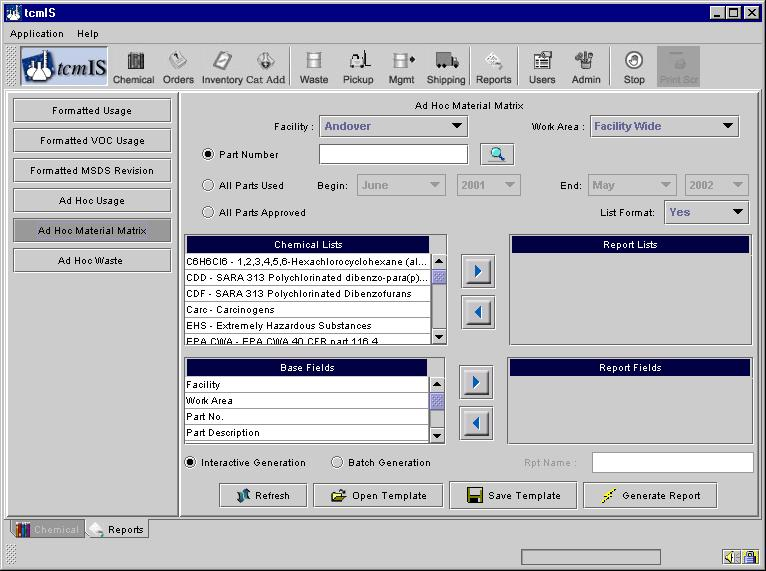
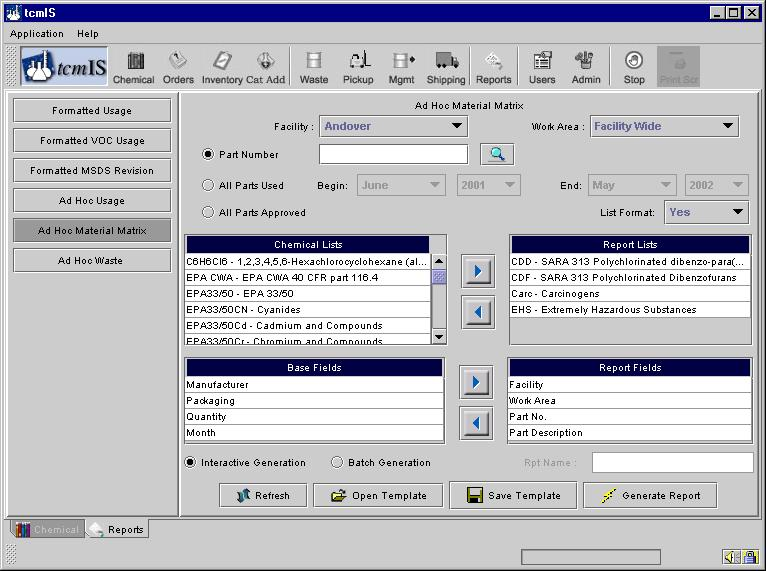
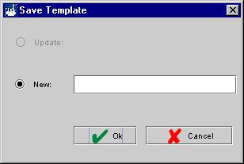
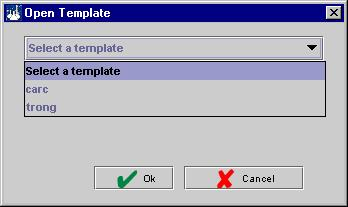

To generate an Ad Hoc Material Matrix click on the button "Ad Hoc Material Matrix" on the left. This screen will generate a report of the chemicals used in the search criteria chosen.

First choose a facility and work area for which you want to generate this report. Further you can either choose a particular Part Number or all parts used during a certain time period or all parts that have been approved for the particular facility and work area.
The Next Step is to choose the report fields that you want to add to the report. Chemical Lists and Base Fields are the list of columns available for this particular report. Report Fields are the fields/columns you want on your report. You can move the base fields into the report fields by clicking on the field you want and then clicking on the button with a arrow pointing to the right (). In a similar process you can remove fields from your list of the report fields my choosing and clicking on the button with an arrow pointing to the left ().
To start over you can hit the button "Refresh" to reset all fields back to what they were. After you move the fields you want in your report the screen would be similar to below.

Another way of doing this would be to load a template (if you already have one). If you are using this screen for the first time then there will be no templates saved under your name. If you think you are going to make this report repeatedly or even if you don’t, you can save all the criteria you just choose for your report as a template. To save hit the button "Save Template"; this brings up a dialogue box.

You can either save with a new name or if the template already exists you can update the template. By creating a template you do not lose the ability to change criteria. You can change all the criteria even after you save the template.
So the next time you want to generate the same report you can load this template by clicking on the button "Open Template". This brings up a dialogue box, which lists all the templates stored under your name.

Choose the template you want to load and hit ok.
Finally to generate the report you can choose between an Interactive option and the Batch option, the default being Interactive. Ad Hoc reports are all editable no matter which option you choose they generate MS-Excel files.
In the "Interactive" option the report is displayed in a browser immediately after you press "Generate Report". For "Batch" option an email is sent to you informing about the status of your report which you can pickup at your convenience. For the Batch option you can also name your report, if you don’t provide a name, a name is assigned automatically.
Mostly all the reports are kept on our servers for about two weeks. If you want to keep a permanent record of the reports you generated it is suggested to save the report locally on your computer.